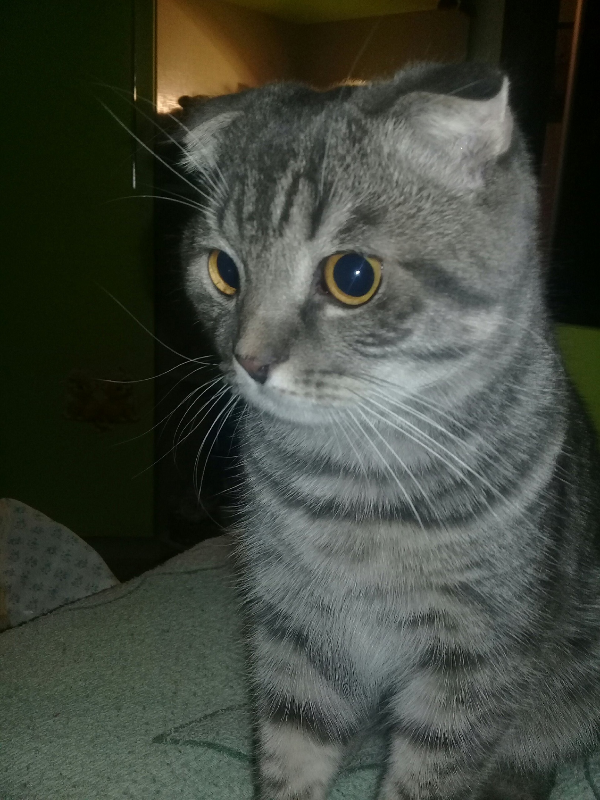

У котов есть третий слой века, который действует как солнцезащитные очки и защищает их глаза от яркого света и ультрафиолетового излучения.
Коты имеют около 244 костей в своем теле, что больше, чем у людей (206). Коты умеют различать человеческие эмоции по выражению лица и голосу.
Кошачье мурлыкание происходит на частоте, которая способствует росту костей и заживлению ран.
Нос кота уникален, как отпечатки пальцев человека, и его можно использовать для их идентификации.